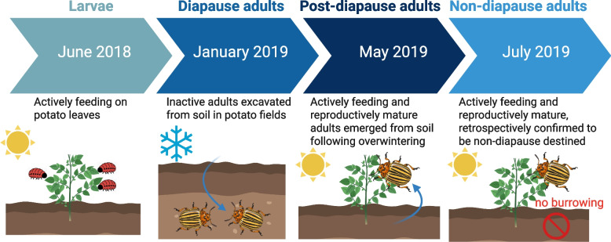

2025
RESEARCH
Diapause & aestivation
We study how insects reorganise metabolism and gene expression to enter, maintain and terminate seasonal dormancy.
Recent work examines diapause-associated lipid remodelling in the fat body of the Colorado potato beetle and proteomic changes during aestivation in the cabbage stem flea beetle. Transcriptomics, proteomics and lipid analysis connect molecular changes with insect physiology.

Study design for the Colorado potato beetle lipid-remodelling study, comparing larvae, diapause adults, post-diapause adults and non-diapause adults. Original image reproduced without modification.
Related publications
2026
Journal of Insect Physiology
Proteomic changes associated with the initiation and termination of aestivation in the cabbage stem flea beetle
2025
Insect Biochemistry and Molecular Biology
Reciprocal roles of two trehalose transporters in aestivating cabbage stem flea beetle (Psylliodes chrysocephala)
2024
Proceedings of the National Academy of Sciences
The integral role of de novo lipogenesis in the preparation for seasonal dormancy
2026
Archives of Insect Biochemistry and Physiology
Transcriptomic and Proteomic Insights Into Diapause in the Wheat Stink Bug, Aelia rostrata
2025Book chapter
Insect Lipid Metabolism. Advances in Experimental Medicine and Biology